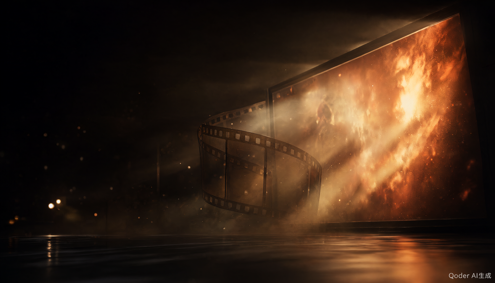

把播放页链接粘进来，
直接看好剧。
腾讯、优酷、爱奇艺、芒果 TV 的会员内容都能解析。不用注册、不用装客户端，卡在某一线路时换下一条即可。

粘贴链接并点「解析播放」，画面会出现在这里
示意画面 · 实际清晰度取决于源站与线路
线路状态 每 5 分钟自检
- 万能线路2.1s · 正常
- 线路 1 · 高清2.8s · 正常
- 线路 2 · 极速6.4s · 偏慢
- 线路 3 · 备用3.0s · 正常
先说清楚：本站只做在线解析播放，不存储、不提供下载任何片源。请用于学习与交流，观看后 24 小时内删除，勿作商业用途。
怎么用
整个过程通常不超过十秒。真正会卡住的只有一件事：粘进来的地址不是播放页，而是搜索结果页或短视频分享页。
- 01
复制播放页地址
在视频网站点开某一集，复制浏览器地址栏里那一串，不要复制分享口令。
- 02
粘贴并选线路
放进上方解析框，先用默认线路；不同站点在不同线路上的兼容性差别很大。
- 03
点解析播放
画面出现在右侧播放器，默认尝试 1080P，清晰度由源站决定。
- 04
不通就换一条
一直转圈或黑屏时，依次切到线路 2、线路 3；刷新后重试通常能解决。
常见问题
没找到答案？把站点、线路和现象描述发到 feedback@ityvip.xyz，一般两个工作日内回。
AD · 广告位 970×90广告投放：ads@ityvip.xyz